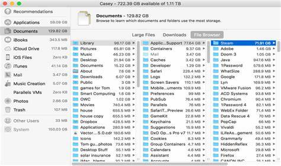

Decodificación.
Consiste en tomar el código numérico e identificar a cuál de las operaciones que puede realizar el CPU corresponde dicho código. Esta etapa usualmente se realiza con un decodificador binario.
Este tema se conecta directamente con algunos puntos anteriores ya que: Un programa es un conjunto de instrucciones almacenadas de acuerdo al orden en que deben ejecutarse. Por lo tanto, toda computadora debe ser capaz de procesar las instrucciones de su programa en un ciclo de instrucción, consistente en un número de etapas que varía con cada CPU, pero que tradicionalmente han sido tres (trabajando en un cpu ideal).
Esta consiste en leer de la memoria cual será la siguiente instrucción a e jecutar, la cual esta almacenada en forma de un código numérico que indica cual de todas las operaciones que puede realizar el CPU será la siguiente y con que operandos se ejecutará.
Consiste en tomar el código numérico e identificar a cuál de las operaciones que puede realizar el CPU corresponde dicho código. Esta etapa usualmente se realiza con un decodificador binario.
En esta etapa se lleva a cabo la operación sobre los datos que se vayan a procesar. En general, la unidad de control (UC) genera las señales de control necesarias para llevar los datos a las entradas de la Unidad Aritmética Lógica, la cual efectuará las operaciones aritméticas y lógicas. Posteriormente, la unidad de control generara las señales de control necesarias para transferir la salida de la Unidad Aritmética Lógica al registro donde serán almacenados los resultados para su uso posterior.
